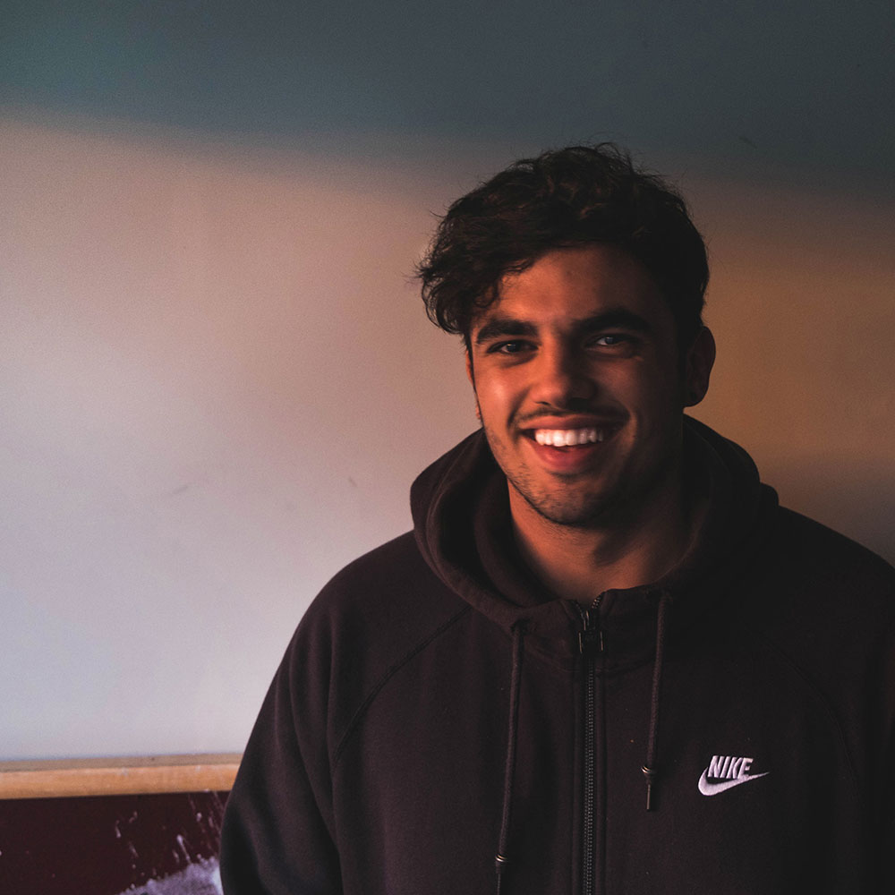
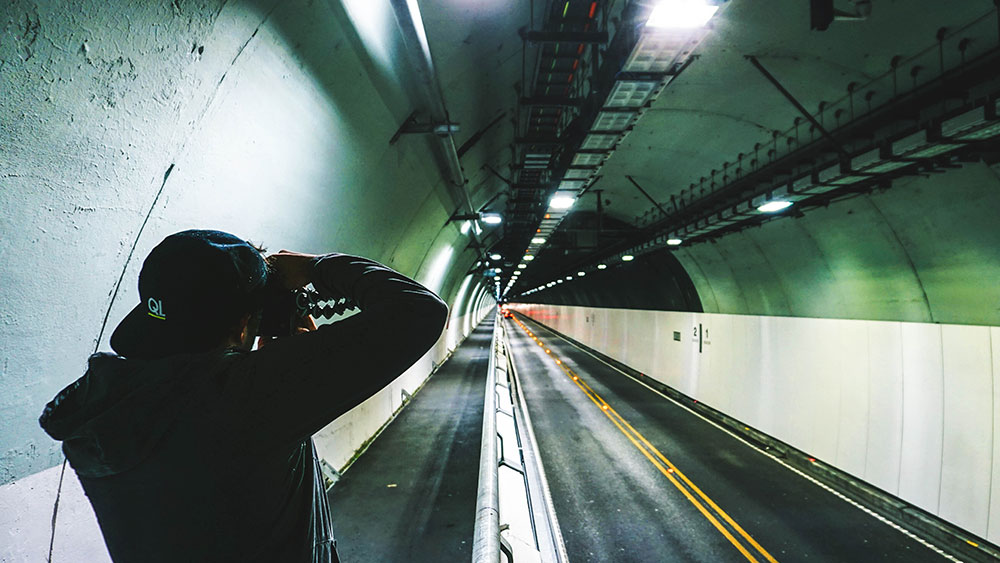

WHO AM I?
My name is Hamish Singh Johl, born in Blenheim, at the top of the South Island of New Zealand. I am 18 years of age. Ever since i've known, creating has been a passion of mine, from creating cities out of paper when I was a small child, to designing characters and personalized weapons assigned to a game mechanic, just last year. I have and always will be a person who creates. I am currently studying Creative Media Production at Massey University - College of Creative Arts, in attempts to take my love of creation and turn it into something much more. Moving to Wellington at the start of this year was definitely an eye opener, and being surrounded by people who have the same ambition as me has never been so valuable. I created this page to express my life through a lens, and see where it takes me in the future.

